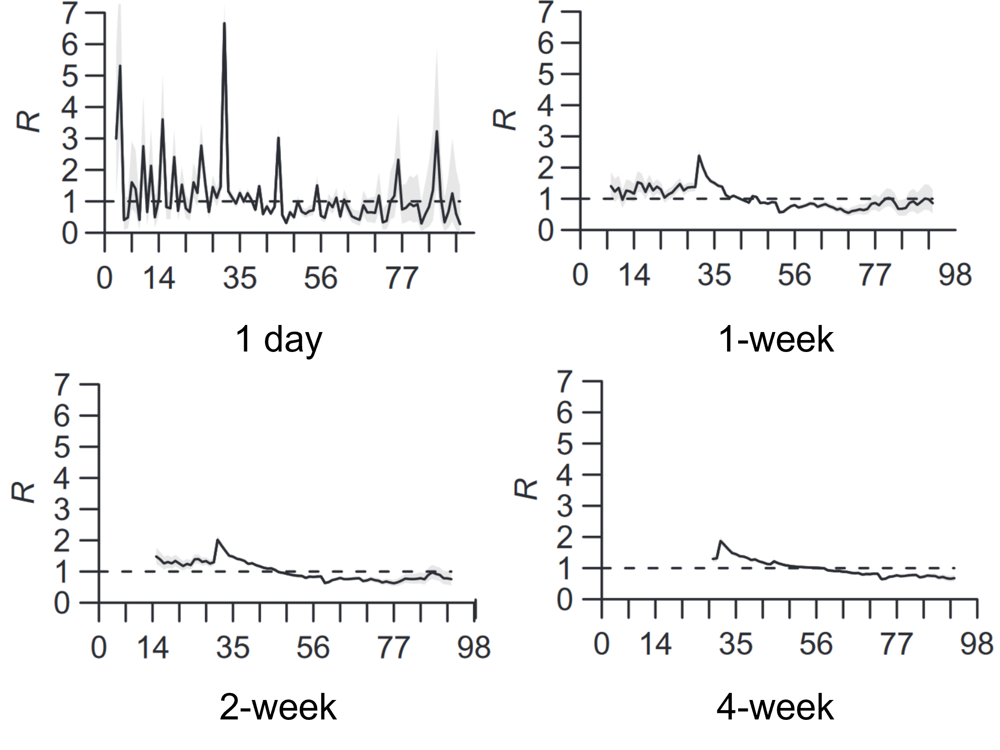
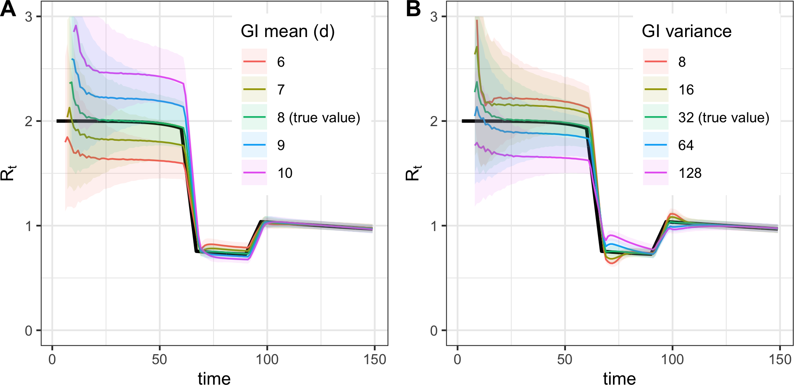
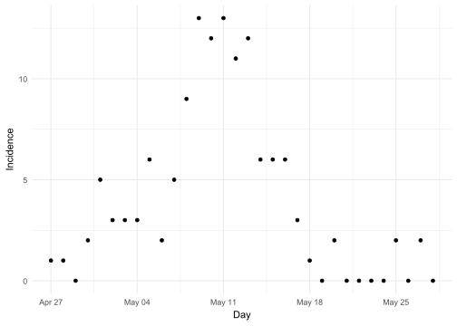
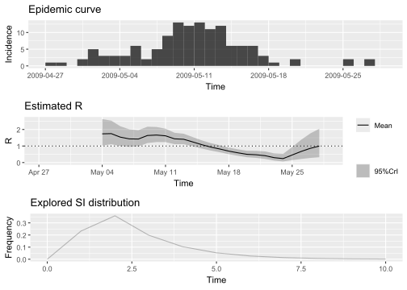
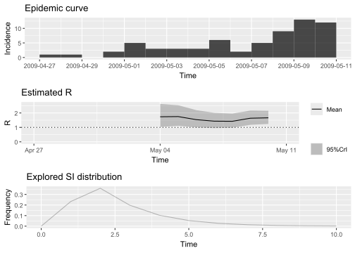

14 Estimating \(R_t\)
\(R_t\) can be defined in 2 ways: as the instantaneous reproduction number (see Section 3.1) or as the case reproduction number (see Section 3.2).
14.1 Instantaneous reproduction number \(R_t^i\)
Definition 14.1 The instantaneous reproduction number is the expected number of secondary infections occurring at time \(t\), divided by the number of infected individuals, each scaled by their relative infectiousness at time \(t\) (an individual’s relative infectiousness is based on the generation interval and time since infection) (Gostic et al., 2020).
14.1.1 Exact calculation
For a compartmental model (SIR or SEIR), \(R_t^i\) can be calculated exactly as (Gostic et al., 2020):
\[R_t^i = \beta(t) S(t) D\]
- \(\beta(t)\): the time-varying transmission rate.
- \(S(t)\): the fraction of the population that is susceptible.
- \(D\): the mean duration of infectiousness.
14.1.2 Cori method
\[R_t^i = \frac{I_t}{\sum_{s = 1}^{t} I_{t - s} w_s}\]
- \(I_t\): the number of infection on day \(t\).
- \(I_{t - s}\): the number of individuals who became infected \(s\) days in the past.
- \(w_s\): the infectivity profile, describes how infectious an individual is \(s\) days since infection, \(w_s\) dependent on time since infection \(s\) but independent of calendar time \(t\), and often be approximated by the generation interval (Cori et al., 2013).
- \(I_{t - s} w_s\): we scale the number of individuals who became infected \(s\) days in the past by how infectiousness are they still on day \(t\) (which is \(s\) days after the date they got infected, \(w_s\)).
Looking back at Definition 14.1, \(R_t^i\) is the expected number of secondary infections occurring at time \(t\) (\(I_t\)), divided by the number of infected individuals (\(\sum_{s = 1}^{t} I_{t - s}\)), each scaled by their relative infectiousness at time \(t\) (\(w_s\)).
The only parametric assumption required by this method is the form of the generation interval. The standard assumption is that \(w_s\) follows a discretized gamma distribution, but any parametric or empirical discrete distribution also work (Gostic et al., 2020).
14.1.2.1 Interactive intuition
The three stacked panels below map one-to-one onto the formula. The top panel shows daily incidence: gray bars are past cases \(I_{t-s}\), the red bar is today \(I_t\) (the numerator), and the amber overlays are each past day’s weighted contribution \(I_{t-s}\cdot w_s\). The middle panel shows the generation interval \(w_s\) in purple — but aligned to day \(t-s\) (not a raw lag axis), so each purple bar sits directly under the amber bar it produces. Visually: gray \(\times\) purple \(=\) amber. Summing the amber bars gives the denominator. The bottom panel shows \(R_t\) computed across the whole series (teal), with the dashed line at \(R_t=1\) and a red dot marking the day you selected — so you can see how the one-day calculation sits in the broader trajectory.
Three things to try:
- Drag across the epidemic and watch the red dot trace out the \(R_t\) panel: \(R_t\) starts well above 1 on the rising limb, crosses 1 right around the peak, and falls below 1 as the outbreak declines. At the very start — when only a handful of prior cases exist — \(R_t\) can shoot well above 3; the y-axis expands to show the true value.
- Increase the mean GI: the purple bars shift further to the left, so the amber contributions in the incidence panel come from earlier days. When the epidemic curve is steep, this visibly changes \(R_t\) — the accuracy bias discussed below.
- Decrease the SD GI: the generation-interval panel gets narrower and more peaked, so \(R_t\) becomes jumpier from day to day.
TipProofs
The renewal equation (also called the Euler-Lotka equation (Wallinga & Lipsitch, 2006)) is a cornerstone of demographic theory and backbone of the \(R_t\) estimators.
\[b(t) = \int_{a = 0}^{\infty} b(t - a) n(a) da\]
- \(b(t)\): the number of female offspring at time \(t\).
- \(b(t - a)\): the number of mothers of age \(a\) at time \(t\), which is equal to the number of female offspring at time \(t - a\).
- \(n(a)\): the birth ability of mothers of age \(a\), scaled by the probability of surviving to age \(a\).
- \(\int_{a = 0}^{\infty}\): summing these female offspring over all possible mothers’ ages, we obtain the total number of female offspring at time \(t\) which is \(b(t)\).
This equation assume that the population displays exponential growth at a fixed growth rate and that the age distribution of the population does not change over time (Wallinga & Lipsitch, 2006).
To describe epidemic dynamics, the renewal equation is expressed in terms of \(I(t)\).
\[I(t) = R_0 S(t) \int_{s = 0}^{\infty} I(t - s) w_s ds\]
- \(R_0 S(t) = R_t\): see Definition 3.
- \(I(t - s)\): the number of individuals who became infected \(s\) time points ago in the past.
- \(w_s\): the infectivity profile, or the probability of how infectiousness are they still at time \(t\) (which is \(s\) time points after the date they got infected).
- \(I(t - s) w_s\): we scale the number of individuals who in the past by how infectiousness are they still at time \(t\).
Now we transform the equation a bit, and we got something very similar to the Cori method (see Section 14.1.2).
\[R_t = \frac{I(t)}{\int_{s = 0}^{\infty} I(t - s) w_s ds}\]
14.1.3 When can we start estimating \(R_t^i\)?
Cori et al. suggest starting estimating \(R_t^i\) once those three criteria are fulfilled (Cori et al., 2013):
- At least after the sliding window size.
- At least after one mean serial interval.
- At least 12 cases (the initial case + 11) have been observed since the beginning of the epidemic (in a time window): to get a posterior credible interval of 0.3, the time window must comprise at least 11 incident cases.
14.1.4 Key considerations
Source: Dr. Anne Cori’s webinar.
- Temporal resolution: we can’t apply the \(R_t^i\) method when the time step of observation is too large (> mean generation interval).
- Spatial resolution: ideally use a spatial scale that you can distinguish locally infected cases from imported cases.
- \(R_t^i\) is very sensitive to the size of the sliding window: small windows can lead to highly variable estimates with wide credible intervals, whereas longer windows lead to smoothed estimates with narrower credible intervals. Perhaps also consider at least 11 incident cases in a sliding window to get a posterior credible interval of 0.3 (Cori et al., 2013).

14.2 Case reproduction number \(R_t^c\)
Definition 14.2 The case or cohort reproduction number is the expected number of secondary infections that an individual who becomes infected at time \(t\) will eventually cause as they progress through their infection (Gostic et al., 2020).
14.2.1 Exact calculation
\[R_t^c = \int_{u = t}^{\infty} R_u^i w_{u-t} du\]
- \(R_u^i\): the instantaneous reproduction number of current infected cases at time \(u\), starting from \(t\) to the end of their infectious period \(\infty\).
- \(w_{u-t}\): the infectiousness of them at that time.
14.2.2 Wallinga and Teunis method
There are 3 steps (Gostic et al., 2020):
Step 1. Estimate the likelihood that case \(j\) (infected at time \(t_j\)) infected case \(i\) (at time \(t_i\)).
\[p_{ij} = \frac{w_{t_i - t_j}}{\sum_{i \neq k} w_{t_i - t_k}}\]
- \(\sum_{i \neq k} w_{t_i - t_k}\): sum of the infectiousness of all cases (other than \(i\)) infects case \(i\).
Step 2. Compute the individual reproduction number of case \(j\).
\[R_j = \sum_i p_{ij}\]
Step 3. Compute the case reproduction number at time \(t\), it is the expected value of \(R_j\) for all individuals infected at time \(t\).
\[R_t^c = \mathbb{E}(R_j)\]
Interactive demonstration
Every circle is one infected case. The outbreak is 1–2–3–2–1 — nine cases over five days, with three cases on the peak day. Same-day cases are stacked vertically in each day-column. Click commits a selection, hover explores.
- Step 1 (blue) — click any case to set \(i\) (clicking again swaps to a new \(i\)). Hover an earlier case to preview it as \(j\): that node, its arc, and the matching \(w_s\) bar all flash red, the \(p_{ij}\) symbol in the header formula lights up red, and the readout at the bottom is wrapped in a red pill matching the formula highlight. Leaving the hover restores the “all past arcs with \(w\)” view.
- Step 2 (green) — click any case to set \(j\); arcs to every later \(i\) are drawn and labelled with their \(p_{ij}\), their sum \(R_j\) printed next to the node. Hover a later case to isolate a single \(p_{ij}\) contribution — the hovered arc thickens and darkens while the others fade.
- Step 3 (amber) — every case prints its own \(R_j\) (top-slot labels go above, bottom-slot below, middle-slot to the right). Day 3 holds three \(R_j\) labels and \(R_t^c\) below the column is their mean. At day-level the three \(R_j\)’s are equal, so the mean equals each; the averaging is what formally defines \(R_t^c\).
Things to try:
- Step 1: hover an earlier case — the arc thickens proportionally to its \(w\) value (scaled up vs. the non-hovered arcs, but still proportional), turns red, and its chip flips from \(w\) to the computed \(p_{ij}\). The readout underneath is wrapped in a red pill matching the formula highlight.
- Step 2: hover a later case — the hovered arc’s stroke now scales with its \(p_{ij}\) magnitude so the chart is numerically honest; the other arcs and their chips dim to ~16% so the isolated contribution is unmistakable.
- Step 3: day 3 holds three \(R_j\) values; \(R_t^c\) under the column is their mean.
14.3 Compare \(R_t^i\) and \(R_t^c\)
There are several important differences (Gostic et al., 2020):
- Instantaneous \(R_t^i\) is real-time estimation and only use data from before time \(t\), while case \(R_t^c\) is inherently forward-looking.
Instantaneous \(R_t^i\) overestimates \(R_t\) early in the time series, because any infections that occurred before the first observed date are missing terms in the denominator (the \(I_{t - s}\) in Section 14.1.2, data is left-truncated at the beginning).
Case \(R_t^c\) underestimates \(R_t\) at the end of the time series, because it relies on time points not yet observed which become missing terms in the integral (the \(R_u^i\) in Section 14.2.1, data is right-truncated at the end).
- Case \(R_t^c\) is shifted forward in time relative to instantaneous \(R_t^i\), produces leading estimates of \(R_t\) because it uses data from time points after \(t\), whereas the \(R_t^i\) uses data from time points before \(t\).
Overall, for real-time analyses aiming to infer the impact of changes in policy, behavior, or other extrinsic factors on transmission, the instantaneous reproductive number will provide more temporally accurate estimates and is most appropriate.
14.4 Potential biases
\(R_t\) is a value in specific time, therefore there are 2 potential forms of bias in \(R_t\) estimates (Gostic et al., 2020):
Accuracy (the value): Systematic over- or underestimation caused by misspecification of the generation interval. Mostly impact when \(R_t\) is substantially > 1 (e.g., the beginning of COVID-19 when \(R_t\) is relatively high) or < 1 (e.g., after a very effective intervention then \(R_t\) might be low).
Timeliness (the time): Temporal inaccuracy that \(R_t\) estimates may be leading or lagging the true date, has several possible causes and can be difficult to avoid.
14.4.1 Generation interval
See Definition 12.1 to recall the definition of generation interval.

Biases from misspecification of the generation interval mean (A) or variance (B) (Gostic et al., 2020).
- If mean generation interval is set too high, \(R_t\) will be more extreme (too high when true \(R_t > 1\) and too low when true \(R_t < 1\)).
- If mean generation interval is set too low, \(R_t\) will be closer to 1 than the true value.
- The effect of the mean generation interval is large when true \(R_t\) further from 1. Therefore, this bias may be greatest at the early epidemic, when true \(R_t\) is high, together with highly uncertain generation interval and limited data.
Tools like EpiEstim and EpiNow2 allow users to specify the prior variance of the mean and standard deviation. However, bear in mind that uncertainty around an incorrect generation interval only widen the 95% credible interval, but will not shift the estimates toward the truth and will not correct this bias.
14.4.2 Delays

Adjusting for delays (Gostic et al., 2020).
If \(d\) is the delay from infection to observation, then observations at time \(t\) inform \(R_{t − d}\), not \(R_t\).
If the distribution of delays can be estimated, then \(R_t\) can be estimated in 2 steps:
- Infer the underlying time series of infections.
- Input the adjusted time series into an \(R_t\) estimation method.
14.5 Code
14.5.1 EpiEstim
The input data
Let have a look at the data.

14.5.1.1
Default config will estimate R on weekly sliding windows.
To change this change the t_start and t_end arguments. Noted that the default config will estimate R on weekly sliding windows (day 2 to day 8).

Default config will estimate R on weekly sliding windows.
To change this change the t_start and t_end arguments. 